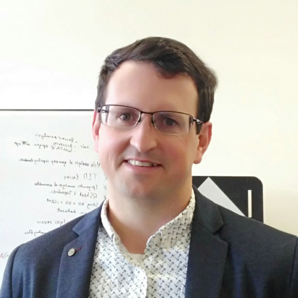

The group is based at Deakin University Geelong, Australia with members across the Geelong and Melbourne. Our group is focused on building data resources and software tools to accelerate biomedical discovery. We collaborate closely with clinicians and biologists to get the most out of their ‘omics experiments. Our lab is committed to reproducibility, open science, and diversity.
Dr Mark Ziemann’s Biosketch
Mark earned his PhD at Swinburne University (2010) in the field of plant molecular genetics under the supervision of Prof Mrinal Bhave and Prof Sabine Zachgo. He then completed an 8-year post-doctoral position at Baker Institute and Monash University under the mentorship of Prof Sam El-Osta using next gen sequencing to study the epigenetics of complex diseases including diabetes and heart disease. Since 2018, he is Lecturer of Bioinformatics and Biotechnology at Deakin University,and research is focused on developing methods and datasets to better understand gene regulation in disease. In 2021 he was awarded a Graduate Certificate in Higher Education and is using these skills to improve the quality of genomics and computational biology teaching at Deakin.

Scientific publications
Blog
Contact me:
twitter: @mdziemann
email: m.ziemann αt deakin.edu.au
email: mark.ziemann αt gmail.com